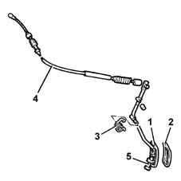
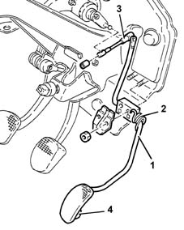
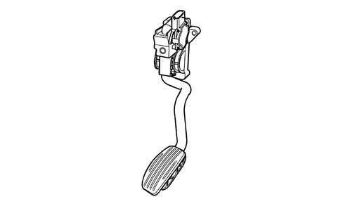
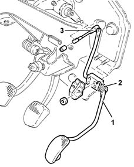
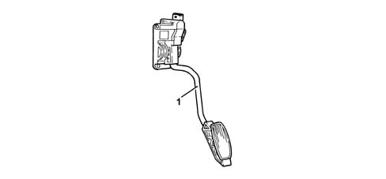

1068A accelerator pedal control
- Path
- Descriptions > 10 ENGINE > 1068 ACCELERATOR CONTROLS > 1068A accelerator pedal control
- Kind
- system description
- Applies to
- engines: 1.6 TS , 1.8 TS, 2.0 JTS, 2.5 V6, 3.2 V6, 1.9 JTD 8v , 2.0 JTS, 2.4 JTD 10v; all production periods
- Interactive page
- https://sloeber94.github.io/elrnDB-a156/en/#/3232844
Applies to: engines: 1.6 TS , 1.8 TS; all production periods
It is achieved by a pedal connected via a special cable to the throttle body integral with M.D.S.
When replacing/refitting the accelerator pedal, adjust it as described in op. 1068A14 and 1068A30.
General view

1, Accelerator pedal 2, Rubber pedal cover 3, Spring 4, Control cable 5, Adjustment screw
Applies to: engines: 2.5 V6; all production periods
It is achieved by a pedal connected via a special rod to the accelerator pedal potentiometer.
The latter informs the injection/ignition control unit of the accelerator pedal position.
When replacing/refitting the accelerator pedal, adjust it as described in op. 1068A14 and 1068A50.

1, Accelerator pedal 2, Spring 3, Rod connected to potentiometer 4, Adjustment screw
Applies to: engines: 3.2 V6; all production periods
CONSTRUCTION FEATURES
ACCELERATOR PEDAL WITH BUILT-IN POTENTIOMETER
The accelerator pedal is fitted with two integrated potentiometers:
- one main one
- one safety one.
The injection control unit implements the following 'recovery' strategies
- if there is a fault with one of the two potentiometers, a butterfly opening of up to 40° is allowed for a long period
- if both of the potentiometers fail completely, the throttle opening is excluded.

Applies to: engines: 1.9 JTD 8v , 2.4 JTD 10v; all production periods
It is made from a pedal connected via a special link to the accelerator pedal potentiometer.
The latter informs the injection/ignition control unit of the accelerator pedal position.

1, Accelerator pedal 2, Spring 3, Rod connected to potentiometer
Applies to: engines: 1.9 JTD 8v ; production: da 04/98 a 02/99; only with equipment: 115 CV
It is carried out by a accelerator pedal with built-in potentiometer 1060G pressure pump electric control .

1, accelerator pedal with built-in potentiometer.
Applies to: engines: 2.0 JTS, 2.0 JTS; all production periods
CONSTRUCTION FEATURES
ACCELERATOR PEDAL WITH BUILT-IN POTENTIOMETER
The accelerator pedal is fitted with two integrated potentiometers:
- one main one
- one safety one.
The injection control unit implements the following 'recovery' strategies
- if there is a fault with one of the two potentiometers, a throttle opening of up to 40° is allowed for a long period
- if both of the potentiometers fail completely, the throttle opening is excluded.